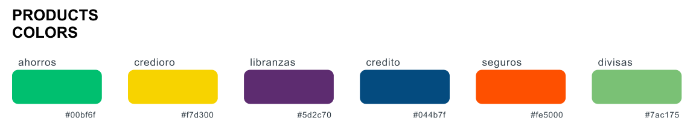
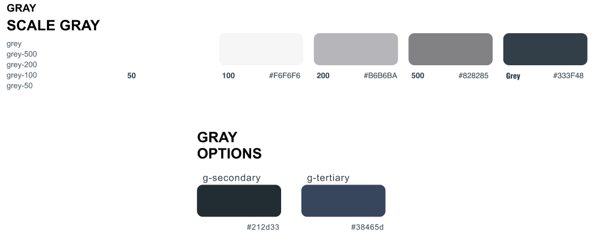

Banco Unión library
Introducción
¡Bienvenido a la documentación oficial de la librería de CSS para Banco Unión! Esta librería representa un recurso invaluable para los desarrolladores que trabajan en proyectos web para Banco Unión. Al integrar las potentes capacidades de Bootstrap Sass con componentes personalizados diseñados específicamente para las necesidades del banco, nuestra librería tiene como objetivo proporcionar una experiencia de desarrollo eficiente y coherente.
Objetivo
El objetivo principal de nuestra librería es brindar a los desarrolladores una herramienta completa y fácil de usar que simplifique el proceso de desarrollo de aplicaciones web para Banco Unión. Queremos asegurarnos de que los equipos de desarrollo puedan crear interfaces de usuario consistentes, atractivas y funcionales de manera rápida y sencilla, aprovechando al máximo las capacidades de Bootstrap y los componentes diseñados para satisfacer las necesidades específicas del Banco Unión.
Características Destacadas
- Integración con Bootstrap Sass: La librería se integra perfectamente con Bootstrap Sass, lo que facilita una experiencia de desarrollo más eficiente y consistente.
- Componentes personalizados: Ofrecemos una variedad de componentes personalizados diseñados específicamente para Banco Unión, lo que te permite crear interfaces de usuario únicas y profesionales.
- Iconos SVG: Implementa fácilmente iconos en formato SVG en tus proyectos con nuestra librería. Los iconos SVG ofrecen escalabilidad y nitidez en cualquier tamaño sin perder calidad.
- Logos en formato SVG: Incluye los logotipos oficiales de Banco Unión en tus aplicaciones web utilizando archivos SVG de alta calidad proporcionados en nuestra librería.
- Documentación detallada y ejemplos de uso: Te ofrecemos una documentación y ejemplos de uso para facilitar la implementación de la librería en los proyectos.
Instalacion
Para comenzar a utilizar la librería de CSS para Banco Unión en tus proyectos, sigue estos sencillos pasos:
1. Instalación de Dependencias
Antes de utilizar la librería, asegúrate de tener agregadas en el header de tu HTML las siguientes dependencias
link rel="stylesheet" href="css/styles.min.css"
link rel="stylesheet" href="node_modules/bootstrap-icons/font/bootstrap-icons.css">
2. Anota las URL de los logos SVG
Recuerda que son logos formato SVG por ende puedes escalarlos sin perder calidad
- Logo para fondo Negro :
- Logo para fondo Blanco :
- Logo para fondo Amarillo :
3. Modulos Bootstrap
Y para finalizar el proceso de configuracion de tu HTML agrega este codigo antes del cierre de body
< script src="node_modules/bootstrap/dist/js/bootstrap.min.js">
4. ¡Listo para usar!
Ahora estás listo para comenzar a utilizar los componentes y estilos de la librería de CSS para Banco Unión en tu proyecto.
Tecnologias usadas
La librería de CSS para Banco Unión ha sido desarrollada utilizando las siguientes tecnologías:
1. Bootstrap Sass
Bootstrap es un popular framework de CSS que proporciona herramientas y componentes para el desarrollo rápido de interfaces de usuario. Utilizamos Bootstrap Sass como base para nuestra librería, permitiendo una integración sencilla y una experiencia de desarrollo más eficiente.
2. Sass
Sass es un preprocesador de CSS que añade funcionalidades avanzadas al lenguaje, como variables, anidamiento de reglas, mixins y más. Hemos utilizado Sass para escribir estilos CSS más limpios, organizados y mantenibles.
3. SVG (Scalable Vector Graphics)
Los archivos SVG son gráficos vectoriales escalables que ofrecen una calidad de imagen excepcional en cualquier tamaño de pantalla. Hemos empleado archivos SVG para los iconos y logotipos de la librería, garantizando una representación nítida y clara en todo momento.
Paso a paso
Al ya tener configurado todo tu entorno de trabajo lo mejor es primero revisar la documentacion de bootstrap
Al ya saber como funciona ya puedes comenzar a codear todo tu sitio con los conceptos basicos de esta libreria y su utilizacion de clases
Mas que la creacion de una nueva libreria le dimos la personalizacion exacta para el banco facilitando mas nuestro trabajo dentro de la compañia
Uso Basico
Fuentes tipograficas
Todas las fuentes utilizadas en esta libreria son las Rubik y Lato que son las fuentes principales del banco con todas sus variaciones desde light hasta extra bold manipulando el font weight
Rubik font
H1. Banco Unión
H2. Banco Unión
H3. Banco Unión
H4. Banco Unión
H5. Banco Unión
H6. Banco Unión
Lato font
H1. Banco Unión
H2. Banco Unión
H3. Banco Unión
H4. Banco Unión
H5. Banco Unión
H6. Banco Unión
Rubik font
300 Light
400 Regular
500 Medium
600 Semibold
700 Bold
800 Extrabold
Lato font
300 Light
400 Regular
500 Medium
600 Semibold
700 Bold
800 Extrabold
Colores
El Banco posee una gama de colores muy caracteristicos los principales son el azul y el amarillo el cual cambiamos sus varibles de CSS con las palabras correspondientes Primary, Secondary y Tertiary. Para acceder a estos colores utilizaremos las variables como las realizamos en el siguiente ejemplo
Texto class="text-primary"
Texto class="text-secondary"
Texto class="text-tertiary"
Aparte de estos colores representativos de la marca, para temas de publicidad y mercadeo cada producto tiene un color diferente creandole una variable para cada uno con su respectivo hexadecimal de la misma como el anterior ejemplo
Texto Ahorros class="text-ahorros"
Texto Credioro class="text-credioro"
Texto Libranzas class="text-libranzas"
Texto Credito class="text-credito"
Texto Seguros class="text-seguros"
Texto Divisas class="text-divisas"
Nuestro principal producto es Western Union el cual maneja unos colores diferentes de igual manera manejandolo por variables de colores
Texto Amarillo WU class="text-wu-amarillo"
Texto Negro WU class="text-wu-negro"
Y para finalizar esta seccion de colores realizamos una gama de colores negativos usados por el banco de la misma manera
Iconos
Para la iconografia de todo el sitio web decidimos utilizar la libreria de bootstrap con mas de 2.000 iconos a nuestra disposicion
Para la utilizacion de los mismos ingresamos a la anterior pagina buscamos el icono que deseemos y pegamos su respectivo codigo en nuestro HTML, por ejemplo este icono llamado bi-currency-exchange, lo encerramos entre las etiquetas i y le podemos configurar las medidas con display o con el font size que en bootstrap es la clase fs, y tambien el color con las variables de color
i class="bi bi-currency-exchange display-2"
i class="bi bi-currency-exchange display-2 text-primary"
i class="bi bi-currency-exchange display-2 text-secondary"
Logos
Para mejor implementacion de los logos, se cambiaron a formato SVG con el fin de poder manipular su color y sus medidas sin afectar la relacion de aspecto o la resolucion del mismo, para esta libreria se implementaron 3 logos usados principalmente con cobranding y el logo principal individual